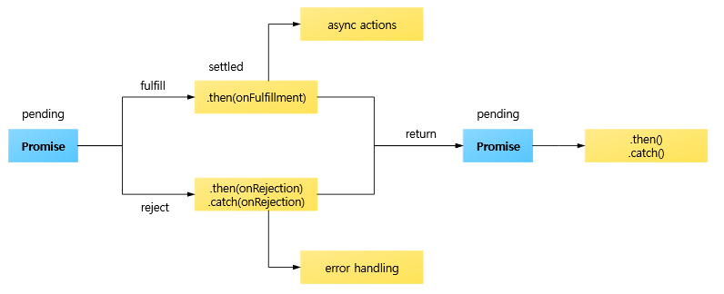

Promise는 JS의 비동기 처리에 사용되는 객체로 비동기 작업이 종료된 이후에 결과값 또는 실패 이유에 대한 처리를 할 수 있다.
Promise는 pending(대기), fulfilled(이행), rejected(실패) 3가지의 상태가 존재하며 이 중 하나의 상태를 가진다.

pending(대기)은 비동기 처리를 이행하지도 거부하지도 않은 초기 상태를 의미한다.
즉, resolve() 또는 reject() 메서드가 아직 호출되지 않은 상태를 의미한다.
fulfilled(이행)는 비동기 처리가 성공적으로 완료된 상태를 의미한다.
즉, resolve() 메서드가 호출된 상태를 의미한다.
rejected(실패)는 비동기 처리가 실패한 상태를 의미한다.
즉, reject() 메서드가 호출된 상태를 의미한다.
기본적으로 Promise는 함수에 콜백 함수를 전달하는 대신에 콜백 함수를 첨부하여 반환하는 객체이다.
이때 첨부되는 콜백 함수의 매개변수는 resolve, reject 이다.
new Promise( (resolve, reject) => {
<동작할 코드>
if (<비동기 작업 성공>) {
resolve()
}
if (<비동기 작업 실패>) {
reject()
}
})
resolve() 메서드가 호출되면 Promise는 fulfilled(이행) 상태가 된다.
resolve() 메서드는 인자를 가질 수 있으며 해당 인자는 Promise 객체의 후속 처리 메서드(then())로 전달된다.
보통 비동기 작업을 통해 얻어진 결과값을 넘길때 인자를 통해 넘긴다.
reject() 메서드가 호출되면 Promise는 rejected(실패) 상태가 된다.
reject() 메서드는 인자를 가질 수 있으며 해당 인자는 Promise 객체의 후속 처리 메서드(catch())로 전달된다.
보통 비동기 작업이 실패한 이유에 대한 에러 메세지를 넘길때 인자를 통해 넘긴다.
Promise로 구현된 비동기 함수를 호출하는 측에서는 Promise 객체의 후속 처리 메소드(then(), catch())를 통해 비동기 처리 결과값 또는 에러 메시지를 전달받아 처리한다.
<PromiseName>()
.then( (res) => {
<동작할 코드>
})
.catch( (err) => {
<동작할 코드>
})
then() 메서드는 두 개의 콜백 함수를 매개변수로 받을 수 있으며 첫 번째 매개변수는 비동기 작업이 성공시 호출되는 콜백 함수이며 두 번째 매개변수는 비동기 작업이 실패시 호출되는 콜백 함수이다.
<PromiseName>()
.then( (res) => {
<첫 번째 매개변수 코드>
}, (err) => {
<두 번째 매개변수 코드>
})
첫 번째 콜백 함수 매개변수에서 resolve() 메서드를 통해 넘긴 인자를 매개변수로 받을 수 있다.
두 번째 콜백 함수 매개변수에서 reject() 메서드를 통해 넘긴 인자를 매개변수로 받을 수 있다.
비동기 작업이 성공적일 경우만 다루고 싶다면 두 번째 매개변수를 생략하면 된다.
보통 비동기 작업이 실패한 경우는 catch()에서 다루기 때문에 두 번째 매개변수는 많이 생략된다.
catch() 메서드는 비동기 처리에서 에러 또는 then() 메서드에서 에러가 발생하면 호출된다.
<PromiseName>()
.catch( (err) => {
<동작할 코드>
})
Promise는 후속 처리 메서드(then(), catch())를 chaining(체이닝)하여 여러 개의 Promise를 연결하여 사용할 수 있다.
<PromiseName>()
.then( (res) => {
<동작할 코드>
})
.then( (res) => {
<동작할 코드>
})
.then( (res) => {
<동작할 코드>
})
.catch( (err) => {
<동작할 코드>
})
Promise.all() 메서드는 순회 가능한 객체가 들어있는 배열을 매개변수로 받아 주어진 모든 Promise를 이행한 후 Promise를 반환한다.
Promise.all([<순회 가능한 객체>])
모든 Promise가 성공하면 처리 결과를 배열에 담은 새로운 Promise를 반환한다.
이때 배열에 담기는 결과는 처리 순서가 보장된다.
즉, Promise.all() 메서드의 배열 매개변수에 담긴 순서대로 처리 결과가 배열에 담긴다.
주어진 Promise 중 하나라도 실패하면 가장 먼저 실패한 Promise를 즉시 반환한다.
Promise.all() 메서드 또한 Promise 후속 처리 메서드를 사용할 수 있다.